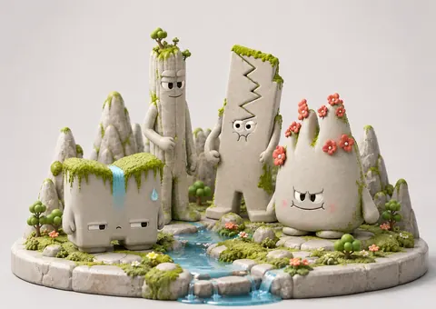

PORTFOLIO / SELECTED WORKS 2026哈尔滨，中国
BEYONDthe FRAME.

+FORM / 001
IMAGINATION IN MOTION
IMAGINATION IN MOTION
拖动，改变视角
01 / SELECTED WORKS
创意，不止一面。
从形象的诞生，到故事的展开。
以不同媒介，回应同一份好奇。
13 个项目
THE EXPLORATION CONTINUES更多作品 / INDEX
02 / MOVING IMAGES
影像之中，
万物有声。
MOTION
PICTURES05
AIGC 影像 / 非遗叙事 / 文旅表达
THROUGH MY LENS
捕捉，另一种秩序。
在日常的光与影里，
找到城市自己的节奏。
03 / THE PERSON BEHIND THE PIXELS
OPEN TO NEW POSSIBILITIESDESIGN IS A WAY OF SEEING.
HELLO, I'M
孙重勇SUN CHONGYONG
哈尔滨华德学院 · 视觉传达设计本科生
预计毕业 / 2027
用设计观察世界，也用设计回应世界。
我关注品牌视觉、文化 IP 与 AI 辅助创作，喜欢把文化和日常中的线索，转化为有性格的形象、有秩序的画面和有温度的故事。从平面到影像，持续探索表达的更多可能。
下载个人简历 DOCX视觉表达
品牌视觉 / IP 形象 / 包装 / 版式 / 插画 / 海报
设计工具
Photoshop / Illustrator / InDesign / After Effects / C4D
AI 辅助创作
ChatGPT / Claude / Midjourney / Lovart / 可灵 AI / 即梦 AI
03全国总决赛一等奖
05全国总决赛获奖
08获奖证书
RECOGNITION / 2026
让创作，
留下回响。
中国好创意（第二十届）
暨全国数字艺术设计大赛